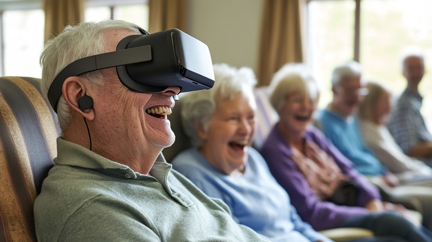

Hospitals & Rehabilitation
Accelerate recovery and reduce patient stress with immersive therapies that encourage mobility, ease pain, and restore optimism.
Explore Hospital & Rehab Solutions

Elder Care Facilities
Boost memory recall, increase social engagement, and improve overall wellbeing with experiences designed for senior joy and comfort.
Discover Elder Care Solutions